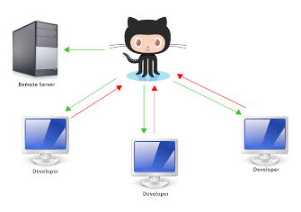
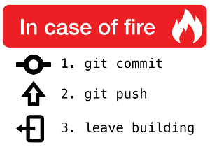
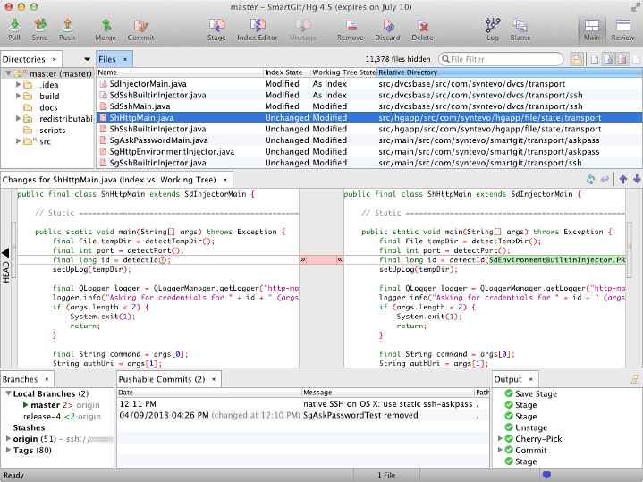
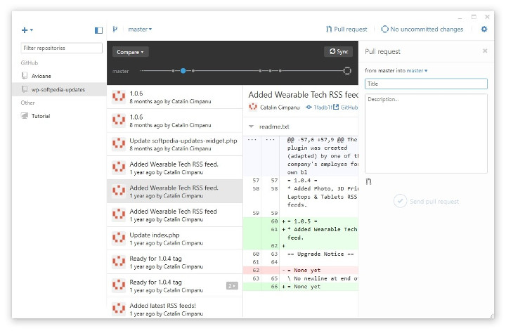
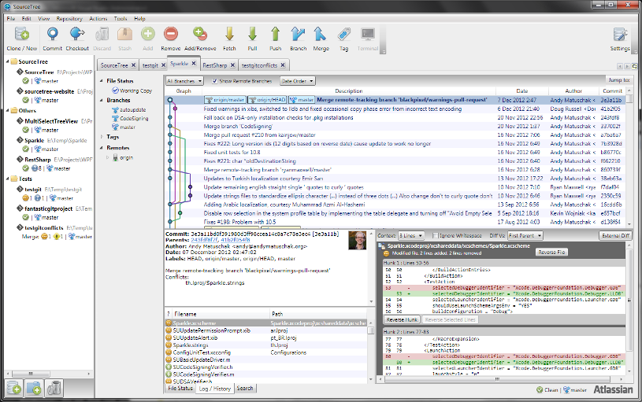
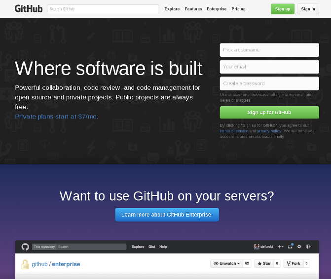
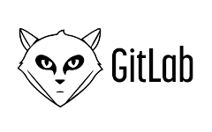

Controle de Versão com
Git e Github
(Conceitos Básicos)
Licença

Esta apresentação está licenciada com uma Licença Creative Commons - Atribuição 4.0 Internacional.
Podem estar disponíveis autorizações adicionais às concedidas no âmbito desta licença em viniciusaires7/minicurso-controle-de-versao-com-git-github.

Vinícius Aires Barros
Desenvolvedor Web e AndroidGitHub: @viniciusaires7

Herinson Rodrigues
Desenvolvedor WebGitHub: @herodrigues
Mas afinal de contas o que é o Git?
Git é um sistema de controle de versão distribuído e um sistema de gerenciamento de código fonte com ênfase em velocidade, integridade de dados e suporte para workflows não lineares distribuídos.
Mas afinal de contas o que é o Git?
Igualmente a vários outros sistemas de controle de versão distribuída, e diferente da maioria dos sistemas cliente-servidor, qualquer diretório Git é um repositório totalmente desenvolvido com um completo histórico de controle de versão independente de acesso à internet ou de um servidor central
Mas afinal de contas o que é o Git?
O Git é muito utilizado em diversas empresas de desenvolvimento e funciona muito bem na maioria dos projetos, independentemente do tamanho do projeto ou do seu tipo. Ou seja praticamente todos os projetos que você irá desenvolver você poderá usar o Git como ferramenta de controle de versão.
Uma breve história sobre o GIT
Git foi inicialmente projetado e desenvolvido por Linus Torvalds para o desenvolvimento do kernel do Linux em 2005
Software Livre
Assim como o Kernel do Linux, Git é um software livre distribuído sob a GNU GPLv2
GUIs para Git
SmartGIT (Multiplataforma) GUIs para Git
GitHub Desktop (Windows e OSX) GUIs para Git
Source Tree (Windows e OSX) Serviços similares ao GIT
Mas afinal de contas o que é o GitHub?
GitHub é um serviço web de hospedagem compartilhada para projetos que usam o controle de versão Git. Ele oferece todos os tipos de controle distribuído de versão e funcionalidades de gereciamento de código-fonte (SCM) do Git assim como diversas outras funcionalidades.
Mas afinal de contas o que é o GitHub?
Ao contrário do Git, que é basicamente restrito à linha de comando, o Github oferece interface gráfica para web assim como para desktop e integração mobile. O Github também possui diversas funcionalidades de controle de acesso e colaboração tais como bug tracking, requisição de funcionalidades, gerencimento de tarefas e wikis.
Mas afinal de contas o que é o GitHub?
O Github oferece tanto planos privados como contas grátis que são geralmente utilizadas para hospedar projetos de software livre. Além disso, o Github oferece planos grátis para estudantes que possuem email institucional ativo. Em 2015, o Github informou ter mais de 9 milhões de usuários e mais de 21.1 milhões de repositórios, sendo assim o maior serviço de hospedagem de código-fonte no mundo!
Website GitHub
Acessem: https://github.com/
Uma Breve História sobre o GitHub
O desenvolvimento da plataforma Github começou em 1° de outubro de 2007. O site foi lançado em abril de 2008 por Tom Preston-Werner, Chris Wanstrath, and PJ Hyett depois de ter ficado por alguns meses no ar em fase beta.
Criadores do GitHub
- Tom Preston Werner e Chris Wanstrath
- PJ Hyett e Scoth Chacon
Serviços similares ao GitHub
Mas por que usar o Git e GitHub?

- Utilizar em projetos individuais ou em grupo
- Fazer controle de versão de arquivos pessoais
- Controlar arquivos de exercícios feitos em sala de aula
- Empresas cada vez mais olham os perfis de seus candidatos no GitHub
Como instalar o GIT?
GNU LINUXOSX
Windows
Baixar o instalador do GIT
Primeiros Passos
- Criando pasta do projeto
- Acessando diretório da pasta do projeto
- Inicializando o GIT no diretório
Adcionando o primeiro arquivo
- Criando arquivo index.html
- Verificando status dos arquivos no diretório do projeto
- Adcionando todos os arquivos ao index git
- Criando o primeiro commit referente ao projeto
Criando uma conta no Github
Primeiramente vamos acessar o site oficial do Github em https://www.github.com
Documentação/Livros


Comandos básicos do GIT
| git init | git status | git clone |
| git add | git rm | git commit |
| git log | git push | git pull |
Comando git init
Possíveis comandos
Comando git status
Possíveis comandos
Comando git add
Possíveis comandos
Comando git rm
Possíveis comandos
Comando git commit
Possíveis comandos
Comando git clone
Possíveis comandos
Comando git push
Possíveis comandos
Comando git pull
Possíveis comandos
Comando git log
Possíveis comandos
Comandos Avançados do GIT
| git branch | git checkout | git merge |
| git diff | git remote | git tag |
| git rebase | git reset |
Comando git branch
Possíveis comandos
Comando git checkout
Possíveis comandos
Comando git merge
Possíveis comandos
Comando git diff
Possíveis comandos
Comando git remote
Possíveis comandos
Comando git rebase
Possíveis comandos
Comando git reset
Possíveis comandos
Comando git tag
Possíveis comandos
Introdução a Branching

Branch (Ramificação) é mais um dos recursos do git para um melhor controle sobre os commits feito no projeto.
Criando o primeiro Branch
- Verificando status do projeto
- Listando todos os branch do projeto
- Criando um novo branch
Outras operações com branch
- Mudando de um branch para outro (checkout)
- Deletando um branch
Merge de um branch
- Merge de um branch com outro
- Deletando um branch
Extra
 Saiba mais
Saiba mais
Referências
- Git Documentation. Disponível em: https://git-scm.com/documentation. Acesso em 19 de outubro de 2015. Fonte: GIT DOCUMENTATION: https://git-scm.com/documentation
- Git Book. Disponível em: https://git-scm.com/book/en/v2. Acesso em 19 de outubro de 2015. Fonte: GIT BOOK: https://git-scm.com/book/en/v2
Agradecimento